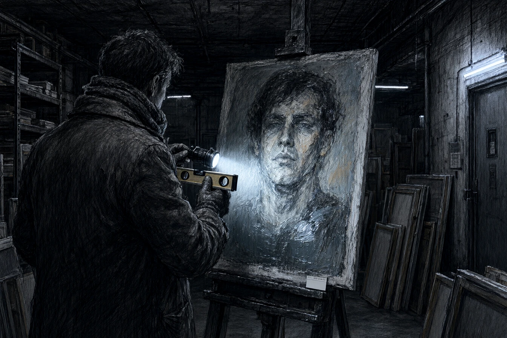

Dans l'ancien moulin à tan de la Petite France, dont les poutres de chêne plongeaient droit dans les eaux brunes de l'Ill, Monsieur Armand Delacroix avait fait poser un parquet de chêne blanchi et des projecteurs orientables à faisceau froid. Sur les murs chaulés, vingt toiles sans cadre flottaient à hauteur d'yeux.
Le musée s'appelait le Sanctuaire des Marges. Les journalistes, eux, parlaient d'âmes perdues. Delacroix, silhouette étirée dans un veston de velours cramoisi, accueillait le bâtonnier de l'ordre des avocats et deux adjoints au maire pour un prévernissage réservé aux notables.
Delacroix avait gardé les roues, les auges de pierre et les engrenages du moulin, qu'il montrait aux journalistes avant chaque exposition. La restauration avait été financée par la ville, la région et un mécénat d'entreprise dont le nom s'étalait sur une plaque de cuivre, près de l'entrée. La lumière des projecteurs découpait les ombres des visiteurs sur le parquet.
Le bâtonnier, un homme court aux lunettes d'écaille, avançait devant les toiles avec le recul méthodique d'un notaire devant un inventaire. Sa femme, engoncée dans un manteau de fourrure claire, demanda si les artistes étaient suivis. Delacroix inclina la tête.
« Ils le sont depuis le premier jour, madame. C'est même la nature exacte du suivi qui les a conduits ici. »
Un traiteur en veste blanche faisait circuler des coupes de crémant entre les invités. L'un des adjoints portait l'écharpe tricolore sous un pardessus bleu marine et hochait la tête à chaque phrase du mécène, comme un paroissien qui connaît le texte. Sur une longue table, des catalogues neufs empilaient leurs couvertures mates. Le titre, imprimé en lettres blanches, tenait en trois mots : Les Âmes du silence. En première page, une citation de Delacroix annonçait que « la marge est le seul centre qui ne mente pas ». La phrase était composée en gros caractères, au-dessus d'une reproduction de l'Anonyme Sept.
« Regardez cette pâte, disait Delacroix en désignant un visage convulsé peint au couteau sur de la toile de jute. C'est l'Anonyme Sept. Vingt-huit mois d'isolement au pavillon cinq de Stephansfeld. Pas une goutte de préméditation académique. C'est la douleur pure qui gicle sur le support. »
Il désigna l'Anonyme Dix-neuf, un profil d'homme sans yeux, dont la bouche ouverte semblait chercher l'air. Les invités se penchaient, reculaient, hochaient la tête. Le bâtonnier demanda si les œuvres étaient signées. Delacroix répondit que l'anonymat faisait partie du protocole.
Léo Meyer, engagé pour la semaine comme régisseur d'accrochage, tenait son niveau à bulle à trois pas du groupe. À vingt-quatre ans, sorti des Arts Décoratifs sans entregent ni fortune, Léo connaissait la toile par les mains : le grain, l'apprêt, la colle de peau. Il avait passé la matinée à régler les projecteurs un par un, à vérifier la distance des cimaises, à reprendre l'aplomb d'un châssis qui penchait d'un demi-degré. Dans une chambre sous les toits, trois de ses propres toiles attendaient un mur qu'il n'avait pas les moyens de louer.
Tandis qu'il fixait le cartel de cuivre de l'Anonyme Sept, son regard glissa vers la tranche inférieure du châssis.
Sous une couche de vernis mat passé à la hâte, une étiquette thermique d'inventaire clinique portait un code-barres et le sigle imprimé au tampon gras : OC-LAB. L'étiquette avait été collée de travers. Léo gratta du bout de l'ongle. Le code-barres résista. Sous la clarté froide, le sigle ressortait dans le bois. Juste à côté, gravé à la pointe sèche dans le bois blanc du pin d'Oregon, un œil stylisé surmontait deux initiales cursives : G.S.
Delacroix s'interrompit. Le regard du jeune homme s'était arrêté sur le bas du cadre.
« Un défaut de verticalité, Meyer ? » demanda le mécène d'une voix basse en s'approchant.
« Le châssis est neuf, monsieur Delacroix. Du pin moderne à feuillure industrielle. Ce n'est pas le bois d'un grabat d'asile des années cinquante. »
« Les œuvres ont été retendues pour la conservation, trancha Delacroix sans ciller. Retournez vérifier l'éclairage de la salle trois. Les collectionneurs suisses arrivent dans une heure. »
Léo obéit. En traversant la salle, il croisa le regard du bâtonnier, qui souriait aux invités. Derrière les baies du musée, l'Ill charriait des feuilles mortes et la lumière de novembre tombait sur les toiles comme sur des vitrines d'anatomie.
* * *
À minuit, après le départ des derniers invités dont les berlines s'étaient dispersées le long des quais, Léo utilisa le double des clés de l'office pour descendre aux réserves souterraines, sous les voûtes de grès où tournait autrefois la roue du moulin.
L'escalier sentait le salpêtre et le vernis. Une rampe de fer, vissée dans la pierre, descendait en spirale jusqu'à une porte blindée. Léo poussa le battant. L'air des réserves était plus froid que celui du musée, et une odeur de papier moisi se mêlait à l'odeur des pigments.
L'endroit servait de magasin de stockage. Derrière une rangée de paravents coupe-feu, cinquante toiles similaires étaient classées par séries alphabétiques. L'humidité avait soulevé les coins de certains châssis. Des toiles retournées contre le mur laissaient voir leurs clous et leurs agrafes. Léo tira une fiche cartonnée glissée dans une pochette plastique scotchée au dos de la toile seize.
Ce n'était pas un certificat d'authenticité. C'était un protocole d'observation médicale en trois volets, rédigé sur papier à en-tête d'une société civile de recherche clinique sise à Kehl, filiale de biotechnologies d'OmniCorp. Le protocole détaillait des séances de stimulation visuelle sous privation de sommeil appliquées à des résidents de centres de désintoxication, pour la plupart transférés des pavillons de Stephansfeld ou ramassés dans les hébergements d'urgence de la gare centrale. Chaque séance durait six heures, précédée de trente-six heures d'éveil. Les sujets étaient installés devant une lampe stroboscopique et un écran où défilaient des visages, des foules, des vitrines. La séance était suivie d'une heure d'atelier obligatoire avec trois tubes d'acrylique imposés : ocre de fer, bleu d'indanthrène, noir d'ivoire.
Sur chaque fiche, les annotations médicales portaient la signature d'un psychiatre consultant et la contre-signature d'Armand Delacroix, qualifié de directeur de valorisation culturelle. Une clause de consentement, rédigée en corps huit, mentionnait un tuteur d'urgence et une facturation à OmniCorp Santé.
Dans une caisse de bois, Léo trouva des effets personnels. Un portefeuille gonflé de tickets de loterie. Une montre sans bracelet. Un dentier dans un verre d'eau. Sur la dernière page du protocole de la toile seize, une main avait ajouté au stylo bille : Anonyme 16. Trois séances. Bonne réponse au bleu.
Un bruit de pas résonna sur les dalles de l'escalier à vis. Léo glissa la fiche dans sa poche arrière et fit semblant de replacer un escabeau.
Delacroix apparut dans la clarté crue de l'ampoule nue, une bouteille de riesling entamée à la main.
« Vous avez de la curiosité, Meyer. C'est une qualité chez un peintre. C'est un vice chez un manutentionnaire. »
« Vous les avez enfermés pour les faire peindre, dit Léo d'une voix sourde. Vous n'avez rien recueilli du tout. »
« Nous leur avons donné une chambre chauffée, des draps propres et un salaire versé à leur curateur, répondit le mécène en s'asseyant sur une caisse de transport. Qu'est-ce qu'ils faisaient avant ? Ils crevaient sur les bancs de la gare centrale entre deux canettes de bière tiède. Nous avons transformé leur hébétude en cotes d'enchères à Zurich. »
« C'est de la torture de laboratoire, Delacroix. »
« C'est de l'art brut sous contrôle qualité, mon garçon. Sans nous, leur souffrance ne valait pas un centime. Grâce à nous, elle paie les salaires de ce musée et vos vacations de régisseur. »
Delacroix but une gorgée au goulot, puis posa la bouteille sur une palette. Il regarda les cinquante toiles alignées dans la pénombre, et son visage prit une expression de propriétaire satisfait.
« J'ai un grenier sous les toits. Cent mètres carrés, une verrière, de quoi peindre autre chose que des cimaises. Le Sanctuaire ouvre une résidence en janvier. Je peux vous inscrire. Vous auriez un mur, un catalogue, et le temps de travailler. »
Léo ne répondit pas tout de suite. Dans sa poche, le coin de la fiche lui entrait dans la hanche.
« Vous voulez m'acheter. »
« Je veux vous éviter de finir régisseur. Réfléchissez. La fiche que vous avez dans la poche ne vaut rien. Ce que je vous propose vaut une carrière. »
« Et les hommes de la fiche ? »
« Leur curateur a déjà été payé. »
Delacroix reprit sa bouteille et remonta l'escalier sans se retourner. La porte blindée claqua. Léo resta seul avec les cinquante toiles, le dentier dans son verre et le bourdonnement des tubes. Il remonta à son tour, éteignit les lumières, verrouilla la porte. Dans la cour, la lune éclairait les pavés. Il resta un moment immobile, la fiche contre la cuisse, à écouter l'eau passer sous les arches.
* * *
Le lendemain après-midi, Léo poussa la porte de la galerie L'Œil Intérieur, rue des Dentelles. L'odeur d'encaustique et de café froid y régnait en permanence. La galerie occupait l'ancienne boutique d'un relieur. Les murs étaient blancs, et la vitrine donnait sur la ruelle. Madame Dubois y exposait des artistes que les institutions ignoraient, à condition qu'ils aient déjà un collectionneur.
Madame Dubois, assise derrière son bureau d'acajou, chaussait ses bésicles pour examiner les trois bordereaux d'adjudication de la vente de Zurich que le musée lui avait demandé de remettre à la galerie.
« Delacroix achète ses pigments chez le même grossiste que moi depuis quinze ans », dit-elle sans lever les yeux. « Vous croyez m'apprendre la lune ? »
« Il exploite des cobayes cliniques pour fabriquer des toiles cotées à Zurich, madame Dubois ! On ne peut pas laisser ouvrir cette exposition comme si c'était une rétrospective normale. »
« Et qui va s'en plaindre ? Les familles touchent un pourcentage sur les catalogues. La moitié du conseil d'administration d'OmniData siège à la commission des acquisitions du musée d'Art moderne. »
« Il y a les signatures G.S., insista Léo. Les mêmes que sur la note qui accompagnait la toile vendue à Élise Moreau. »
« Taisez-vous sur Élise Moreau », coupa la vieille femme d'un ton sec, en retirant ses lunettes.
Elle les posa sur le buvard, les branches ouvertes, et désigna la ruelle par la fenêtre à petits carreaux.
« Cette fille cherchait le martyre pour ses abonnés ; elle l'a trouvé au fond d'un flacon. Delacroix vend ce que les riches ont peur de vivre. Si vous portez cette fiche à la presse, la préfecture fermera le rez-de-chaussée pour défaut d'issue de secours et Delacroix rouvrira à Bâle le mois prochain avec les mêmes toiles et un carton d'invitation plus cher. »
« Vous saviez qu'elle achetait ses toiles ? »
« Je savais qu'elle achetait. Le reste ne me regarde pas. »
Elle repoussa les papiers vers Léo d'un doigt noueux.
« Les acheteurs ne viennent pas pour les toiles. Ils viennent pour l'histoire. »
« Vous trouvez ça normal ? »
« Je trouve ça rentable. Gardez votre souffle pour votre propre travail. Ou partez avant qu'on ne vous coupe les bourses d'atelier. »
Léo ramassa les bordereaux. Sur le seuil, la voix de la galeriste le rattrapa.
« Laissez-moi la fiche. Je la mettrai en lieu sûr. »
« Non. »
« Alors dépêchez-vous. Le vernissage est dans trois jours. »
Il sortit. La rue des Dentelles sentait la choucroute et le cuir mouillé. Il marcha jusqu'au quai sans ouvrir son manteau.
* * *
À dix-huit heures, la brume monta de la rivière, estompant les passerelles de bois et les lanternes de fer forgé. Les réverbères s'allumaient un à un le long du quai.
Devant la porte du musée, Léo attendit que le gardien verrouille la herse de fer. Il rendait son badge et les clés de l'office le soir même. Sur le trottoir d'en face, Delacroix montait à l'arrière d'un taxi avec deux acheteurs allemands dont les rires gras résonnaient dans le silence de la ruelle. L'un d'eux répétait le mot authentique avec un accent de Hambourg. L'autre riait, la main sur l'épaule de Delacroix.
Léo tira la fiche cartonnée de sa poche. Le tampon OC-LAB y était net, encadré de chiffres d'échantillonnage clinique. La poste centrale fermait à dix-neuf heures. La salle était vide. Un agent en gilet bleu classait des recommandés derrière la vitre. L'agent demanda à Léo s'il voulait un envoi suivi. Léo secoua la tête et acheta un timbre, déplia sa serviette de cuir, glissa le document dans une enveloppe bulle adressée au service des fraudes de la direction départementale des finances publiques, colla l'enveloppe et la pesa sur la balance automatique. Le distributeur afficha le tarif en lettres vertes. Il marcha vers la boîte postale jaune fixée au mur de la poste centrale.
La fente d'acier engloutit l'enveloppe dans un claquement sourd. Léo remit ses mains dans ses poches de caban et remonta le quai des Pêcheurs. À l'angle de la rue des Dentelles, la vitrine de L'Œil Intérieur était allumée. Une affiche annonçait, pour le 10 décembre, le vernissage du Sanctuaire des Marges à Bâle. Le carton était imprimé depuis longtemps.
Léo ne ralentit pas.